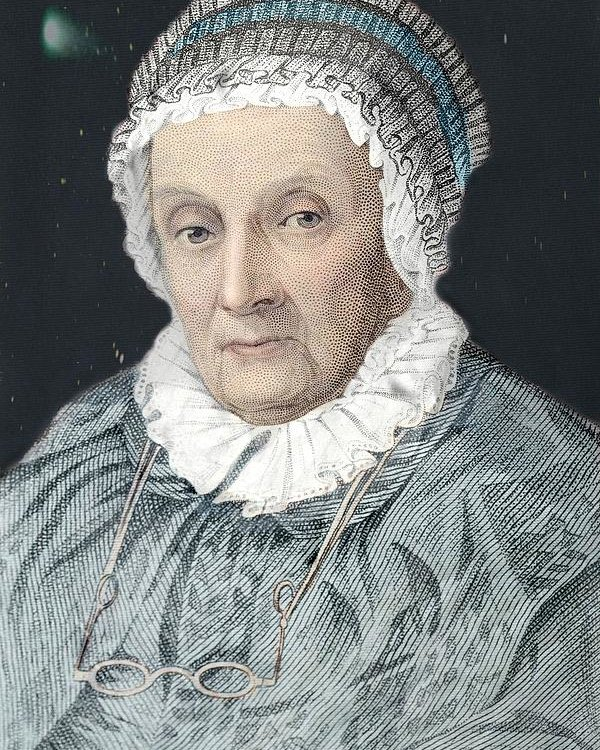

by Anthony
Postado em 1 de Janeiro, de 2019 às 12:00
Caroline Lucretia Herschel (Hanôver, 16 de março de 1750 — Hanôver, 9 de janeiro de 1848) foi uma astrônoma germano-britânica. Nasceu em uma família de músicos alemães. Em 1772 se mudou para a Inglaterra para ficar com seu irmão, o astrônomo William Herschel. Depois de aprender astronomia sozinha e matemática com a ajuda de seu irmão, ela se tornou sua assistente. Sua contribuição mais significativa para a astronomia foram as descobertas de vários cometas, especialmente o cometa 35P/Herschel-Rigollet.
Mais tarde, em 1787, Herschel foi nomeada assistente do Astrônomo da Corte, tendo sido a primeira mulher a ocupar esse cargo e a primeira mulher a ser paga por sua contribuição. Herschel tornou-se reconhecida em toda a Europa como uma grande astrônoma. Tanto em importante colaboração com seu irmão como sozinha, ela descobriu muitos cometas novos. Recebeu uma série de prêmios por seu trabalho, incluindo a Medalha de Ouro da Royal Astronomical Society, em 1828. Em seu aniversário de 96 anos, ela também recebeu uma Medalha de Ouro da Ciência do Rei da Prússia (1846). Foi uma astrônoma autodidata.
Caroline começou a fazer suas próprias observações em 1782. Durante suas horas de lazer, ela observava o céu com uma telescópio newtoniano de lente focal de 690 mm. Com esse equipamento, ela detectou vários objetos astronômicos, entre os anos de 1783 e 1787, o que incluem as descobertas da M110 (NGC 205), uma galáxia elíptica na direção da constelação de Andrômeda. No período de 1786 até 1797, ela descobriu oito cometas - o primeiro sendo avistado no dia primeiro de agosto de 1786. Em cinco dessas descobertas, ela foi considerada a principal responsável. Em 1878, ela ganhava um salário anual de £50 (o equivalente a £5400 em 2014) de George III por seu trabalho como assistente de William
Em 1835, ela foi eleita membro honorário da Royal Astronomical Society, juntamente de Mary Sommerville - elas foram as primeiras mulheres a participar da sociedade. Em 1838, ela também se tornou membro honorário da Acadêmia Real Irlandesa, em Dublin. Também foi premiada com uma Medalha de Ouro pela Ciência (1846) pelo Rei da Prússia, entregue a ela por Alexander von Humboldt, em reconhecimento dos "seus valiosos serviços, descobertas, observações e cálculos". Na época da premiação estava com 96 anos de idade. O asteroide 281 Lucretia que foi descoberto em 1888, presta homenagem à Caroline levando o seu segundo nome. Uma cratera na lua é batizada em sua homenagem, a cratera C. Herschel.
Seus olhos, em glória, estão voltados para o céu estrelado.